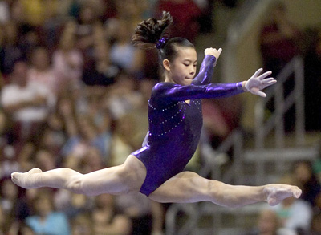

Ivana Hong (USA)
2009 World Bronze Medalist

Medal Total
World Championships: 1 Gold, 1 Bronze
Ivana was born on December 11, 1992, in Worcester, MA. She trains at WOGA with Valery Lyukin. An alternate for the 2008 US Olympic team, she won bronze on beam at the 2009 World Championships. For more information, visit Ivana's website.
Competition
Results
2002
Jr. US Challenge: 3rd AA, 1st B, 4th FX, 6th V
2003
Jr. American Challenge: 2nd AA, 1st UB, 1st B, 3rd FX, 7th V
Jr. US Challenge: 2nd AA, 2nd B, 5th V, 6th UB, 6th FX
2004
Jr. American Challenge: 1st AA, 1st UB, 1st B, 2nd V, 4th FX
Jr. US Championships: 16th AA, 5th B
Jr. US Classic: 10th AA, 3rd B
2005
Jr. US Championships: 8th AA, 4th B, 7th FX
Top Gym: 3rd AA, 1st UB, 1st B
2006
Jr. US Championships: 5th AA, 3rd B, 7th FX
Jr. US Classic: 9th AA, 2nd B, 8th FX
USA-JPN-NZL: 1st Team, 3rd AA, 3rd B, 3rd FX
2007
GBR-USA Dual Meet: 1st Team, 5th AA, 3rd B
Houston Intl. Invitational: 2nd AA, 2nd B, 3rd V
Pan American Games: 1st Team, 3rd AA
US Championships: 4th AA, 5th B, 5th FX, 8th UB
World Championships: 1st Team
2008
Friendship Intl. Exchange: 1st AA, 2nd B, 4th UB
US Championships: 5th AA, 6th B, 6th FX, 7th UB
US Olympic Trials: 5th AA, 5th UB, 7th FX, 8th V, 8th B
2009
Covergirl Classic: 2nd AA, 1st B, 3rd V, 5th FX
US Championships: 2nd AA, 1st B, 5th UB, 6th V
World Championships: 3rd B
This page was created on June 21, 2010.
© Gymn Forum